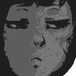
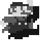

Hey, hey! How about that obvious lack of updates, eh? So why did Froge suddenly up and leave like that? I don’t know either, so quit asking. But listen: I’m gonna make it up to you. Oh boy, just you wait. Just you wait… ☞
Today’s fresh kill is a little light and airy indie rock art game that doesn’t say anything at all though prompts some very philosophical and pragmatic discussion about why the heck this got a review at all. ☞

Today’s review on novels with titles that are extraordinarily exhausting to type more than once is also exhausting, but for more artistic reasons that have little to do with Froge’s inherent and unjustified laziness. ☞
Yes, the masterpiece so nice it must be reviewed twice. Will Froge give this game a well – earned ten out of ten? Or will it languish in Games Hell waiting for somebody to drag it out of its misery and become an EA launch title? ☞

After two months of hard work, the fruits of Froge’s labour is the exceptionally written and beautifully designed Tao of Mario! Over 23,000 words and 36 pages, free forever for all my fans! No, this isn’t an advertisement, shut up. ☞